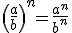
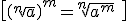

Números reales
Resumen


Una estimación de un número real es otro número real próximo al dado. Una aproximación de orden n de un número es una estimación de dicho número en la que se prescinde de las cifras de órdenes de unidad inferiores a n. Podemos usar la aproximación por defecto o por exceso.
El redondeo de orden n de un número es la aproximación de orden n más próxima al número. Para ello se observa la primera cifra que se quita en la aproximación y si es mayor o igual que cinco, se aumenta una unidad la cifra de orden n.
Cuando hablamos de números aproximados estamos cometiendo un error, la resta entre el número exacto y el aproximado. Esta diferencia se llama error absoluto.
Para comparar errores, usamos el error relativo:

- Intervalo abierto:

- Intervalo cerrado:

- Intervalo semiabierto o semicerrado:

- Intervalos de extremo infinito:




 donde n es el índice, a el radicando y b la raíz
donde n es el índice, a el radicando y b la raíz


Un radical es una raíz cuadrada que no puede ser reducida a un número entero.
Dos radicales son equivalentes si expresan el mismo número.
Radicales semejantes son aquellos que tiene el mismo radicando e índice.
Suma o resta: Sólo se pueden sumar o restar radicales semejantes
Multiplicación y división: si los radicales tiene el mismo índice.
Racionalizar es eliminar los radicales del denominador de una fracción
El logaritmo de un número es el exponente al que hay que elevar otro número fijo, la base.
El logaritmo en base a de b, si a>0 y a≠1, es:

PROPIEDADES


El beneficio que obtenemos cuando prestamos nuestro dinero se llama interés. El porcentaje de beneficio se llama rédito. Esto es interés simple:

Por otro lado, cuando añadimos los intereses a la cantidad prestada, tenemos interés compuesto:

Obra publicada con Licencia Creative Commons Reconocimiento No comercial Compartir igual 3.0